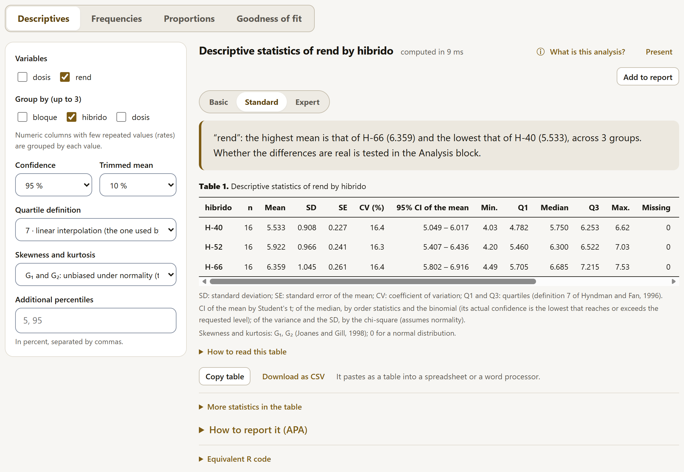
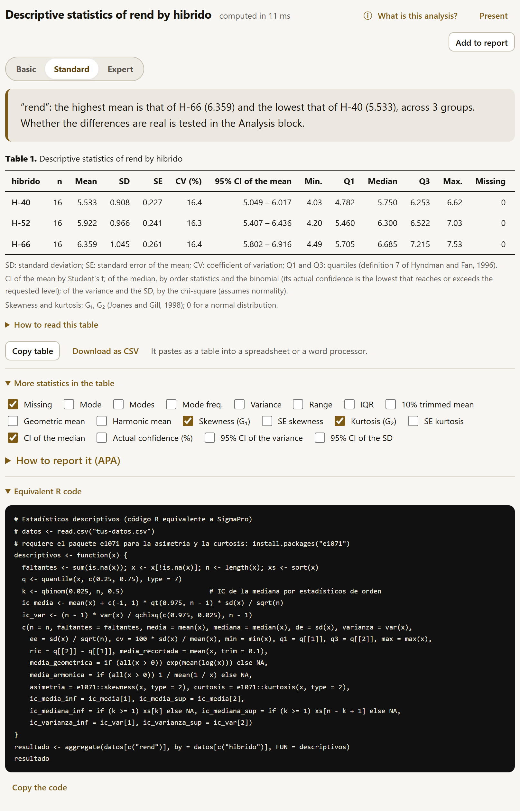
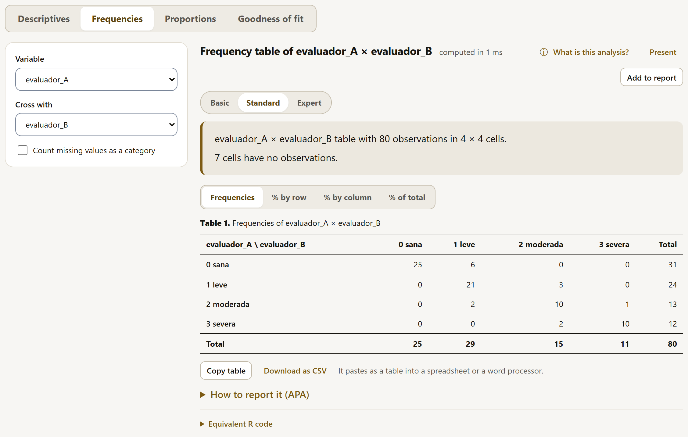
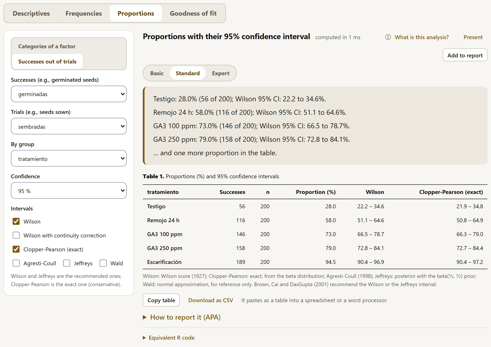
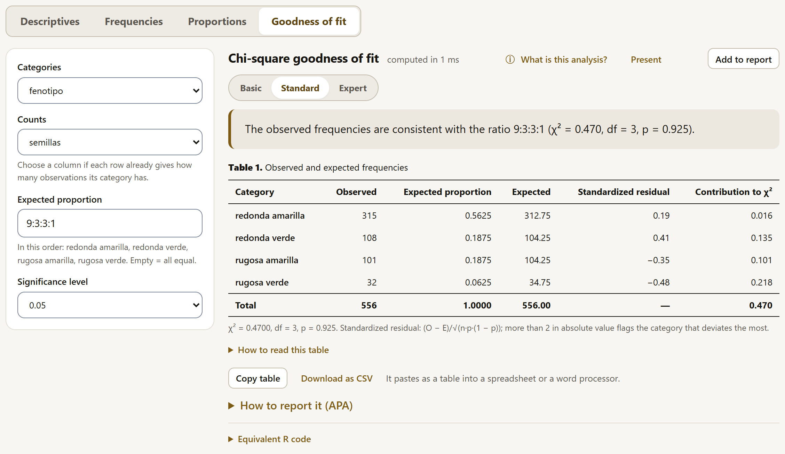

Before testing hypotheses, it pays to get to know the data: where the center is, how much they vary, whether there are odd values, how many observations each group has. Explore offers four summaries (descriptives, frequencies, proportions and goodness of fit), each with its confidence interval, its conclusion in words, the R code that gives the same result and its fact sheet in Fundamentals. Everything computed here can also go to the report.
At the top of the block, four buttons choose the summary. Its options are on the left and the result on the right, and the result is recomputed whenever you change any option.

| Summary | What it is for | Section |
|---|---|---|
| Descriptives | Center, spread and shape of numeric variables, overall or by group, with the interval of the mean, of the median and of the variance. | 3.3 |
| Frequencies | How many observations there are at each level of a factor, or at each combination of two (a cross-tabulation), as counts or percentages. | 3.4 |
| Proportions | A proportion (germination, incidence, mortality) with its confidence interval, by group, with six interval methods. | 3.5 |
| Goodness of fit | Whether some observed frequencies follow an expected ratio (for example, the 9:3:3:1 segregation). | 3.6 |
If a filter is active in the Data block, a note above the options reminds you of it: “With the filter from the Data block: 27 of 48 rows are used.” With no data loaded, the block offers to load them right there (Import a file, Paste a table or Try an example, and the summary appears as soon as they arrive) or to go to Data and, for those planning a trial, the Calculate a sample size or power button, which needs no data (section 4.22).
The summaries in this block say what the data look like, not whether the differences between groups are real. That hybrid H-66 has the highest mean is a description; whether it is significantly higher than H-52 is shown by an analysis of variance with its mean comparison, in the Analysis block (chapter 4). That is why, when there are groups, the conclusions in Explore end with “Whether the differences are real is tested in the Analysis block.”
Every SigmaPro result, here and in Analysis, has the same parts in the same order. It is worth getting to know them once:
| Part | What it is |
|---|---|
| Title | What was computed and on which variables. Next to it, the computing time in milliseconds. |
| Change the options ↓ | Takes you to the summary’s options; useful on a narrow screen, where they sit below the result. |
| ⓘ What is this analysis? | Opens the summary’s fact sheet in Fundamentals: what it is for, what it assumes, what data it needs and how to read it (chapter 9). |
| Add to report | Sends the result to the Results block (chapter 5). The button changes to In the report ✓; the report stores the analysis, not the numbers, and recomputes it if the data change. |
| Present | Shows the result as full-screen slides, for projecting it; ← and → move through them and Esc exits (section 4.5). |
| Basic · Standard · Expert | The level of detail for the whole app (section 4.5). In Explore the table is shown at all three levels; Basic hides the R code and Expert adds the technical notes. |
| Conclusion | The result in words, with the figures that support it. It is the first thing to read. |
| Table | Numbered and with its footnotes, in journal format: rules only at the top, at the bottom and below the headers; aligned figures; decimals according to the precision of the data. If it is wider than the screen, it scrolls sideways; with the keyboard, Tab focuses it and the arrow keys scroll it. |
| View buttons | When a result has several tables, some buttons choose which one is shown (for example, frequencies or percentages). |
| Copy table | Copies the table with all its figures, ready to paste into a spreadsheet or a word processor. |
| Download as CSV | Saves the table as a CSV file, with unrounded values, to open in another program. The file is UTF-8, so accented characters reach a spreadsheet intact. |
| More statistics in the table | (In descriptives.) Checkboxes that add columns to the table. |
| How to read this table | Collapsed below the table when it includes a statistic with a reading guide: a scale with the zones of the guide, a mark at each value and a card that interprets it with the numbers of the case. In Explore it appears below the descriptives, for the skewness, and below the goodness of fit, for the standardized residuals; in Analysis, below almost every table (section 4.5). |
| How to report it (APA) | Collapsed: the methods paragraph and the results paragraph of the summary in APA 7 style, in Spanish and in English, each with Copy (section 4.5). |
| Equivalent R code | The code that gives the same numbers in R, with the Copy the code button. It starts with a comment on how to read in the data and which packages it requires. |

They describe one or more numeric variables, overall or by group. The options:
| Option | What it decides |
|---|---|
| Variables | The numeric columns to describe; one row of the table per variable and group. |
| Group by (up to 3) | The factors that form the groups. A numeric column with a few repeated values (a rate) is grouped by each value. With two or three factors, the groups are their combinations present in the data. |
| Confidence | The level of the intervals (90, 95 or 99%). |
| Trimmed mean | The fraction removed from each end for the trimmed mean (5, 10, 20 or 25%). |
| Quartile definition | The nine definitions of Hyndman and Fan (1996). Type 7 (linear interpolation) is the one used by R and by spreadsheets; type 6 is the one in many textbooks. With large samples they agree; with few observations they may differ slightly. |
| Skewness and kurtosis | Three definitions (Joanes and Gill, 1998): G₁ and G₂, unbiased under normality and the ones in common use; g₁ and g₂, moment-based; b₁ and b₂, corrected by (n − 1)/n. |
| Additional percentiles | Other percentiles added to the table, in percent and separated by commas (for example 5, 95). |
The main table gives, for each variable and group: n, mean, standard deviation (SD), standard error of the mean (SE), coefficient of variation (CV, in %), the confidence interval of the mean, the minimum, the quartiles Q1 and Q3, the median and the maximum. In More statistics in the table you can add: missing values, mode (and how many modes there are and their frequency), variance, range, interquartile range (IQR), trimmed mean, geometric mean, harmonic mean, skewness and kurtosis with their standard errors, the interval of the median with its actual confidence, and the intervals of the variance and of the SD.
With n observations of mean x̄ and standard deviation s:
SE = s / √n · CV = 100 s / x̄ · CI of the mean: x̄ ± t1−α/2; n−1 · SE
The interval of the median is formed by two ordered observations, x(k) and x(n−k+1), with k taken from the binomial distribution (n, ½); that is why its actual confidence (“Actual confidence (%)”) is the first one that reaches or exceeds the requested level, not exactly that level. The interval of the variance comes from the chi-square, (n − 1)s² / χ²; it assumes normality, and the interval of the SD is its square root.
Without groups, the conclusion summarizes the variable: “‘rend’ (n = 48): mean 5.938 (95% CI: 5.644 to 6.232), standard deviation 1.013 and coefficient of variation 17.1%.” With groups, it says which one has the highest mean and which the lowest. It also warns in two cases: when, in a group of eight or more observations, the skewness is greater than twice its standard error (a sign of outliers or that a transformation would help, section 2.9), and when some rows were left out because they have no level in a grouping factor.
The CV of a group describes the variation of the raw data; it mixes the variation among blocks with the error variation. The CV published for a trial is a different one: that of the analysis of variance, computed with the error mean square (in the maize example, 3.6% against the 16% of the raw data by hybrid). That one is given by the analysis of the design in the Analysis block.
They count how many observations there are at each level of a factor (Variable) or, with Cross with, at each combination of two. The Count missing values as a category checkbox adds a row and a column for the empty cells. Numeric columns with few values appear in the lists marked “(numeric)”.

A cross-tabulation has four views, chosen with its buttons: Frequencies, % by row (each row adds up to 100), % by column and % of total. The conclusion gives the size of the table and how many cells have no observations at all. A one-factor table gives, besides the count, the percentage and the cumulative values.
The frequency table describes; to test whether two factors are associated (for example, whether germination depends on the treatment), or whether two raters agree, there are the contingency table, the McNemar and Bowker test and Cohen’s kappa, in the Analysis block (section 4.14).
A proportion can be requested in two ways, chosen with the buttons above the options:
By group computes one proportion per level of a factor, and Confidence sets the level of the intervals. Under Intervals you check the methods you want to see, one column each.

| Interval | What it is like |
|---|---|
| Wilson | Inverts the score test (Wilson, 1927). Its actual coverage stays very close to the requested level even with few trials or extreme proportions. Recommended. |
| Wilson with continuity correction | Wilson’s interval with a continuity correction: wider and conservative. |
| Clopper-Pearson (exact) | Based on the beta distribution. It guarantees at least the requested confidence, at the price of being wider than necessary. |
| Agresti-Coull | The Wald interval with two successes and two failures added (Agresti and Coull, 1998); easy to compute by hand. |
| Jeffreys | The Bayesian interval with the beta(½, ½) prior. Recommended, with properties similar to those of Wilson’s. |
| Wald | The textbook normal approximation, p̂ ± z√(p̂(1 − p̂)/n). For reference only: with fewer than 30 trials or proportions close to 0 or 1 it fails, and the app warns about it. |
The recommendation of Wilson and Jeffreys comes from the review by Brown, Cai and DasGupta (2001), who compared the actual coverage of these intervals. The conclusion shows the first four proportions in words, with the Wilson interval (if Wilson was unchecked, with that of the first checked method), and says how many more there are in the table.
The chi-square goodness-of-fit test tells whether some observed frequencies are consistent with an expected ratio. The classic case in agronomy is Mendelian segregation: in the F2 of a dihybrid, the phenotypes are expected in a 9:3:3:1 ratio.

| Option | What it decides |
|---|---|
| Categories | The variable with the categories (the phenotypes). |
| Counts | If each row already gives how many observations its category has (as in Mendel’s example, with four rows), the column with the counts. If each row is one observation, leave it at “one row per observation”. |
| Expected proportion | One proportion per category, in the order of the levels shown in the help text below, separated by colons: 9:3:3:1, 3:1, 1:2:1. Decimals are also accepted (0.5625:0.1875:0.1875:0.0625). If left empty, equal proportions are tested. |
| Significance level | The α the conclusion uses to decide (0.05, 0.01 or 0.10). |
The table gives, for each category, the observed count, the expected proportion, the expected count (n × proportion), the standardized residual and the contribution to χ²:
χ² = Σ (O − E)² / E, df = k − 1, residual = (O − E) / √(n p (1 − p))
A residual greater than 2 in absolute value flags the category that deviates most from what was expected; when the test rejects, the conclusion names it. If any category expects fewer than five observations, the chi-square approximation may not be good, and the app warns about it: it is better to merge categories or to use an exact test.
A high p value says that the data do not contradict the expected ratio, not that they prove it. With few observations, the test has no power to reject almost anything. Mendel’s 556 seeds are enough to tell 9:3:3:1 apart from very different ratios, not from similar ones.